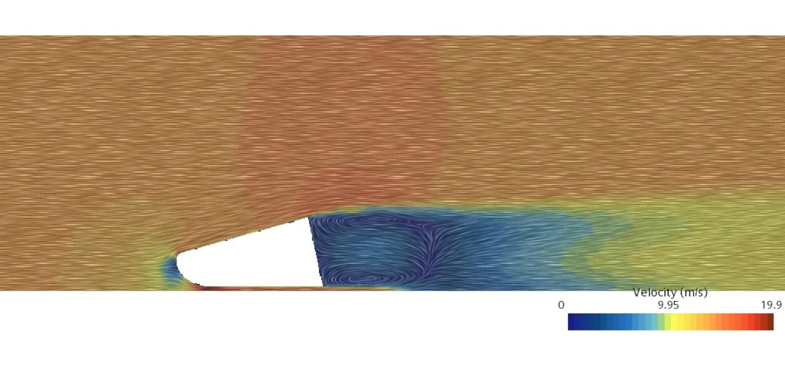
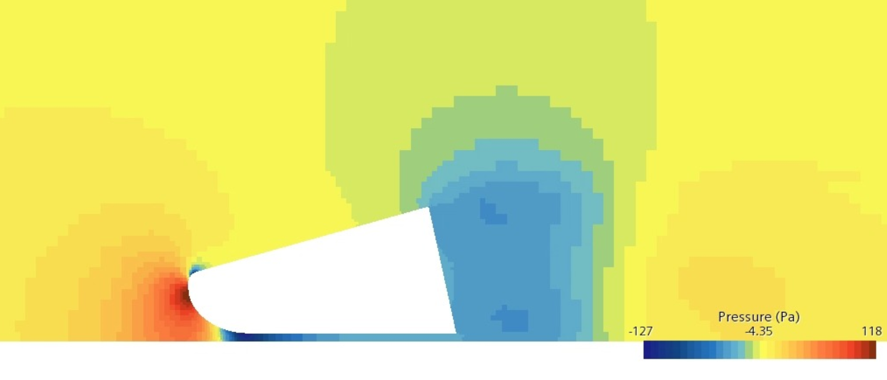
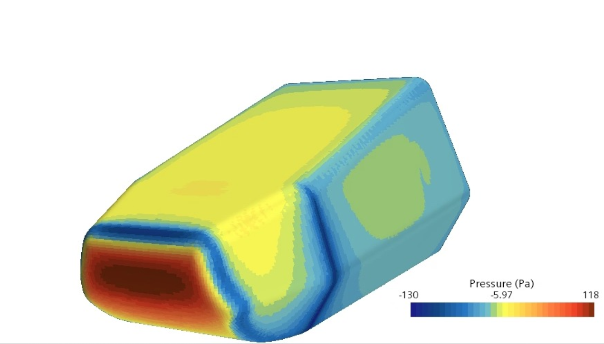
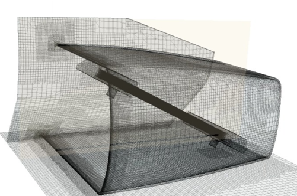
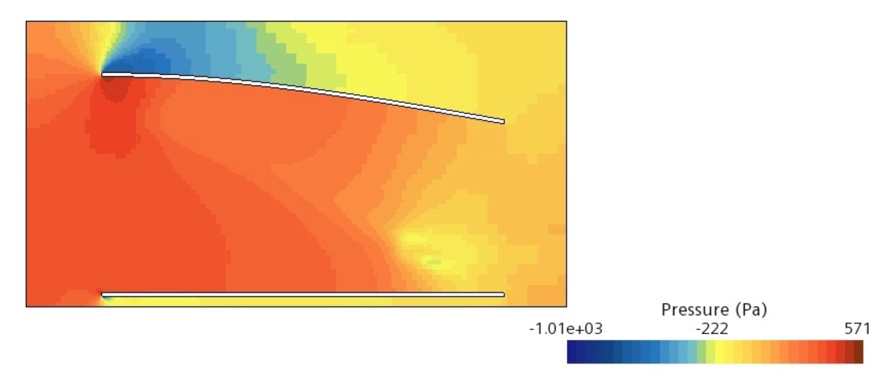
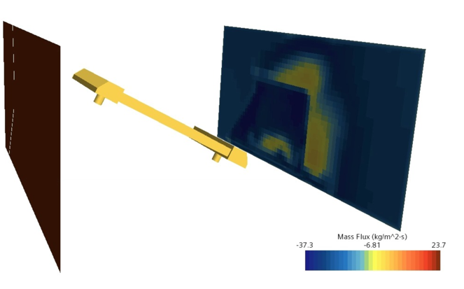

Queen Mary Formula Student - Nosecone & Sidepods Simulation and Optimisation
CFD testing of the nosecone and sidepods to assess whether they met the performance targets
March 2023 - May 2023
Nosecone meshing, utilised in CFD testing
2D flow representation of the airflow over the nosecone with the velocity profile indicated by the colours of the domain.

3D flow representation of the airflow over the nosecone with the streamline displaying the velocity distribution through the colour at each point.
Pressure distribution around the nosecone.
Pressure distribution of the nosecone
3D meshing of the sidepods and surrounding structure.
Pressure distribution of the air within the sidepods
Mass flux out off the sidepods